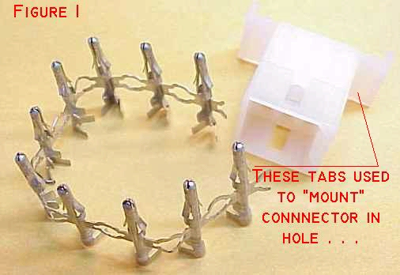

|
|
Bob's Shop Notes: |
 Closeup of the business end of our Open Barrel Terminal Crimp Tool. Note that pockets "C", "D" and "E"
have "butt-cheeks" formed into the upper surface. These pockets cause the end of wire grip wings to
curl over and dive into the approximate center of the wire strands. Pockets "A" and "B" have a smooth,
circular shape used to shape the terminal's insulation-grips into a "bear hug" . . .
Closeup of the business end of our Open Barrel Terminal Crimp Tool. Note that pockets "C", "D" and "E"
have "butt-cheeks" formed into the upper surface. These pockets cause the end of wire grip wings to
curl over and dive into the approximate center of the wire strands. Pockets "A" and "B" have a smooth,
circular shape used to shape the terminal's insulation-grips into a "bear hug" . . . |
 Here's a typical nylon connector housing and a strip of open barrel pins . . . This particular connector is a Waldom/Molex product purchased in a blister-pak from Radio Shack. The techniques described here are typical for all connectors of this genre . . . If you wish to mount the connector in a hole, the wings visible at the rear of the connector housing can be folded flat against the side of the connector. Barbs molded into the wings will slip through the appropriate sized rectangular hole and hold the housing captive in the hole. Check the original manufacturer's data for recommended hole dimensions. |
 Pins supplied in strips are intended for application by automatic machine. The pins come
in reels of perhaps 10,000 and feed into the side of an application machine like a chain
of cartridges into a machine gun. For our use, we need to cut individual pins apart
similar to what you see here. Note that part of the material that joins adjacent pins
is left in place. It's too long in this view and will be snipped off again later.
Pins supplied in strips are intended for application by automatic machine. The pins come
in reels of perhaps 10,000 and feed into the side of an application machine like a chain
of cartridges into a machine gun. For our use, we need to cut individual pins apart
similar to what you see here. Note that part of the material that joins adjacent pins
is left in place. It's too long in this view and will be snipped off again later. |
| Strip the wire about 3/32". Note that I've shortened the insulation grip wings on this pin. These connectors are designed for automotive applications where wiring insulation is MUCH larger in diameter for than the same AWG size in aircraft wire. Left full length as supplied, it's difficult if not impossible to get a proper "bear hug" on the wire's insulation. |
If left in as-supplied shape, the wire-grip and insulation-grip wings tend to rotate the pin in the tool's dies as they close. This can result in a poorly shaped crimp or even broken wings. Use a pair of pliers to bend the wings into a "U" shape with sides parallel or even tilted inward toward each other slightly. |
|
Now comes the fun part. Grip the pin loosely in pocket "D" with the ends of the wire grip wings
pointing toward the pocket's "butt cheeks". Insert the striped end of the wire so that
exposed strands are inside the crimp area. Close the tool while being watchful of dreaded
"pin-spin". If things go as they should, ends of wire grip wings will do a 180 degree turn
and dive back into the center of the strands from both sides. You'll want to squeeze the tool
with as much force as you can with one hand. When you've got a nice LOOKING crimp, put a
5-8 pound pull on the wire to make sure it doesn't pull out easily from under the wire
grip. If it does, you need to squeeze harder next time. Use tool pocket "A" to form the insulation-grip wings down onto the wire's insulation. You'll have to rotate the pin in the tool so that ends of the wings are pushed into the circular bottom of the pocket. As the ends of insulation-grip wings collide in the bottom of the pocket - don't compress the tool any further. Take the pin out and use the end pincers of the tool to deflect end end of one insulation-grip down against the insulation. Return the pin to pocket "A" and rotate the pin in the pocket as you form the insulation-grip wings down smoothly around the wire. The goal here is very different from the electrical connection. The conductor strands need to be in held very tightly while the insulation gets a only snug "bear-hug" as shown here. If you look at similar pins installed on PVC insulated automotive wire, the fabricator may have turned the insulation-grip wings into the insulation not unlike the wire-grip. I DO NOT RECOMMEND this on the aircraft wire - the insulation is too thin. For airplanes we want a simple, snug support of the wire behind the wire-grip without penetrating the insulation. Note also in this view how short the stop tabs are. Trim with caution as you learn how to deal with each style and size of pin. Cut it off too short and the pin will not be properly retained when you install it. If it's too long, it will simply resist insertion into the back of the connector housing. |
|
Now you can install the pin into the connector's housing. In this view, you can see the barbs
that snap out to keep the pin from being pulled backwards through the hole. The stop tabs
will bottom out in the hole from behind to keep the pin from coming on through. The technique I've just described is typical of the AMP Mate-n-Lock and the larger (.093" pins) sized Waldom/Molex connectors. The smaller Waldom/Molex connectors (.063") pins use pockets "E" for wire grip and "B" for insulation grip. Wires of up to 14AWG and carrying up to 10 Amps may be routed through this style of connector. The wire I illustrated here is 20AWG. Use pocket "C" to crimp 16 and 14AWG wire. 22AWG wire is somewhat dicey in .093" pins. Waldom/Molex connectors also come in a smaller size having a nominal pin diameter of .063". Use pockets "E" and "B" to install the smaller pins like D-subminiature pins found on many instruments and avionics products. Some connectors may be supplied with loose pins. In this case, you will not have to trim the stop tabs - they will be the proper length as supplied. You may still have to shorten either wire grip or insulation grip wings to work well with your wire of choice. It's always a good idea to experiment with extra pins on scraps of wire to see what it takes to achieve the smooth and tight crimp/grip shown in Figure 5. Each manufacturer of these connectors offers an extraction tool that will let you remove a pin without damage for re-use in the same or a different location on the connector. Female pins are installed the same way. |